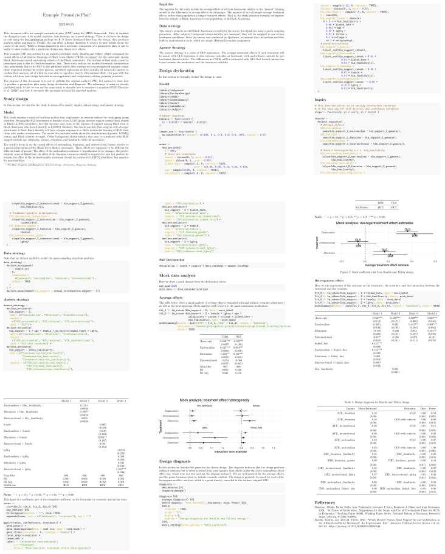

Preanalysis Plan
In many research communities, it is becoming standard practice to publicly register a pre-analysis plan (PAP) before implementing some or all of the data strategy Miguel et al. (2014). PAPs serve many functions, but most importantly, they clarify which design choices were made before data collection and which were made after. Sometimes – perhaps every time! – we conduct a research study, aspects of M, I, D, and A shift along the way. A concern is that they shift in ways that invalidate the apparent conclusions of the study. For example, “p-hacking” is the shady practice of trying out many regression specifications until the p-value associated with an important test attains statistical significance. PAPs protect researchers by communicating to skeptics when design decisions were made. If the regression specification was detailed in a PAP posted before any data were collected, the test could not have been the result of a p-hack.
PAPs are sometimes misinterpreted as a binding commitment to report all pre-registered analyses and nothing but. This view is unrealistic and unnecessarily rigid. While we think that researchers should report all pre-registered analyses somewhere (see Section (populated-preanalysis-plan?) on “populated PAPs”), study write-ups inevitably deviate in some way from the PAP – and that’s a good thing. Researchers learn more by conducting research. This learning can and should be reflected in the finalized answer strategy. One guardrail against extensive post-PAP design changes can be a set of standard operating procedures that lays out what to do when circumstances change (Green and Lin 2016).
Our hunch is that the main consequence of actually writing PAPs is that research designs improve. Just like design declaration forces us to think through the details of our model, inquiry, data strategy, and answer strategy, describing those choices in a publicly-posted document surely causes deeper reflection about the design. In this way, the main audience for a PAP is the study authors themselves.
What belongs in a PAP? Recommendations for the set of decisions that should be specified in a PAP remain remarkably unclear and inconsistent across research communities. PAP templates and checklists are proliferating, and the number of items they suggest ranges from nine to sixty. PAPs themselves are becoming longer and more detailed. Some in the American Economic Association and Evidence in Governance and Politics (EGAP) study registries reach hundreds of pages as researchers seek to be ever more comprehensive. Some registries emphasize the registration of the hypotheses to be tested, while others emphasize the registration of the tests that will used. In a review of many PAPs, Ofosu and Posner (2022) find considerable variation in how often analytically-relevant pieces of information appear in posted plans.
In our view a PAP should center on a design declaration. Currently, most PAPs focus on the answer strategy A: what estimator to use, what covariates to condition on, and what subsets of the data to include. But of course, we also need to know the details of the data strategy D: how units will be sampled, how treatments will be assigned, and how the outcomes will be measured. We need these details to assess the properties of the design and gauge whether the principles of analysis respecting sampling, treatment assignment, and measurement procedures are being followed. We need to know about the inquiry I because we need to know the target of inference. A significant concern is “outcome switching,” wherein the eventual report focuses on different outcomes than initially intended. When we switch outcomes, we switch inquiries! We need enough of the model M in the plan to describe I in sufficient detail. In short, a design declaration is what belongs in a PAP because a design declaration specifies all of the analytically-relevant design decisions.
In addition to a design declaration, a PAP should include mock analyses conducted on simulated data. If the design declaration is made formally in code, creating simulated data that resemble the eventually realized data is straightforward. We think researchers should run their answer strategy on the mock data, creating mock figures and tables that will ultimately be made with real data. In our experience, this is the step that really causes researchers to think hard about all aspects of their design.
PAPs can, optionally, include design diagnoses in addition to declarations, since it can be informative to describe why a particular design was chosen. For this reason, a PAP might include estimates of diagnosands like power, root-mean-squared-error, or bias. If a researcher writes in a PAP that the power to detect a very small effect is large, then if the study comes back null, the eventual write-up can much more credibly rule out “low precision” as an explanation for the null.
Example Preanalysis Plan
We provide an example preanalysis plan in the appendix for Bonilla and Tillery (2020), a study of the effects of alternative framings of Black Lives Matter on support for the movement. The authors of that study posted a preanalysis plan to the As Predicted registry: link. These study authors are models of research transparency: they prominently link to the PAP in the published article, they conduct no non-preregistered analyses except those requested during the review process, and their replication archive includes all materials required to confirm their analyses, all of which we were able to reproduce exactly with minimal effort. Our goal with this alternative PAP is to show how design declaration can supplement and complement existing planning practices.
We show in section (populated-preanalysis-plan?) how to “populate” this PAP once the data have been realized and collected.
